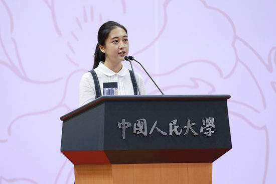

学校名师辈出，俊彦云集，已故名家大师吴玉章、成仿吾、范文澜、艾思奇、何思敬、何干之、何洛、胡华、尚钺、吴景超、李景汉、庞景仁、石峻、缪朗山、李秀林、徐禾、塞风、许孟雄、孟氧、佟柔、戴世光、刘铮、查瑞传、苗力田、林文益、阎达五、阎金锷、方生等为学校的学科发展、学术繁荣和人才培养作出了奠基性、开创性的贡献；老一辈著名学者宋涛、吴大琨、黄达、戴逸、肖前、罗国杰、黄顺基、王思治、高鸿业、卫兴华、胡钧、王传纶、周升业、陈共、周诚、严瑞珍、高铭暄、许崇德、孙国华、王作富、刘佩弦、许征帆、庄福龄、何沁、彭明、彦奇、高放、方汉奇、蓝鸿文、甘惜分、萨师煊、李占祥、赵履宽、钟契夫、李文海、吴宝康、邬沧萍、陈先达、夏甄陶、方立天、张立文、钟宇人、郑杭生、吴易风、胡乃武、周新城、赵中孚、曾宪义等成就卓著，耕耘不辍，为学校的学科建设、人才培养和科学研究奠定了坚实基础。
| 中国人民大学目前有专任教师 | 其中教授 | 副教授 |
| 1，671人 | 499人 | 636人 |

一大批中青年学者学术精湛、锐意创新，成为国内外具有重要影响的著名学者和学术带头人，其中3人入选“长江学者”特聘教授，2人被评为国家级教学名师，15人入选“跨世纪百千万人才工程”和“新世纪百千万人才工程”国家级人选，28人入选教育部哲学社会科学“跨世纪优秀人才培养计划工程”，10人荣获教育部“高校青年教师奖”，66人入选教育部“新世纪优秀人才支持计划”，10人被评为北京市教学名师，55人入选北京市“新世纪社科理论人才百人工程”。